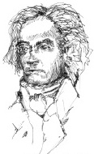

Tarih Ludwig van Beethoven’ı (1770-1827) pek çok şekilde andı: Klasik ve romantik dönemler arasında bir köprü; işkence görmüş, acı çekmiş bir deha ve bazen de tüm zamanların en büyük bestecisi. Ama benzer övgülerle anılan Bach ve Mozart’ın aksine, Beethoven içinde yeteneklerini geliştirdiği gelenekten kaçmak yönünde cesur adımlar atmıştır. Sonunda en gerçek mirası Batı müziğinin ilk büyük müzisyen kişiliği olmasıydı. Yazdığı her parçaya ve müziğini ilk kez duyan her dinleyicinin aklına ve kalbine kendisini yerleştirdi.

Yetişkinlik döneminde Beethoven, acı veren bir bağırsak hastalığından, şiş bir pankreastan ve karaciğer sirozundan çok çekti. 1800 yıllarında, bir bestecinin karşılaşabileceği en kötü kâbusla yüzleşti; duyma yetisini kaybediyordu. Ümitsizliğe düşmek yerine, Beethoven iki kat fazla çalıştı ve tutuşan yaratıcı arzusunun önüne patronlarının kaprislerini koymayı reddetti. “Kalbimde olan şey dışarı çıkmalı” diye yazdı bir mektubunda ve ekledi: “ işte böylece, onu kâğıda döküyorum.”
Beethoven’ın kariyeri üç safhadan geçti. Başlangıçta, oldukça klasik Viyana senfonilerinden ilk ikisinin de aralarında olduğu eserlerinin çoğu, Haydn’ınkilere benziyordu. Bu ilk safha aslında Napolyon Bonaparte’a adanmak niyetiyle yazılmış olan, Beethoven’ın kariyerinin dönüm noktası niteliğindeki Eroica (1804) isimli 3. Senfonisi ile sona erdi. Klasik senfoninin sınırlarını tumturaklı ve şiddetli bir finalle genişletti. Viyana böylesi bir şeyi daha önce hiç duymamıştı. “Kahramanlık dönemi” olarak da adlandırdığı sonraki döneminde Beethoven Fidelio operasını, çeşitli büyüleyici piyano konçertolarını ve bir keman konçertosunu da içine alan başyapıtlarının bazılarını besteledi.
Yaşamının son safhası olan 1810 sonrası dönemde, Beethoven giderek dış dünyadan kendini soyutladı. Yalnızdı, daima âşıktı ve çok acı veren sağlık durumu ve artan sağırlığı nedeniyle ümitsizliğe kapılmış haldeydi. 1827’de Viyana’da, arkadaşlarının arasında öldü.
EK BİLGİLER:
1. Beethoven’ın babası Almanya’nın Bonn şehrinden, küfürbaz, alkolik bir saray şarkıcısıydı. Beethoven küçük bir çocukken babası onu klavsen çalması için saatlerce odasına kilitleyerek, Mozart gibi bir dehâya dönüştürmeye çalışmıştı.
2. 1802’de Beethoven kardeşine, yazdığı kasabanın isminden dolayı “Heiligenstadt Manifestosu” olarak anılan bir mektup gönderdi. Bu meşhur mektupta Beethoven, bazen sürekli bir umutsuzluk içinde yaşadığını, eğer müziğe olan aşkı ve yaşama olan tutkusu olmasaydı kendisini kesin olarak öldürebileceğini, anlaşılması zor, gösterişli bir üslûpla kâğıda döküyordu.